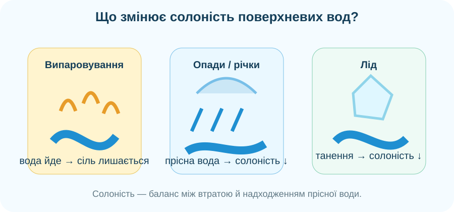
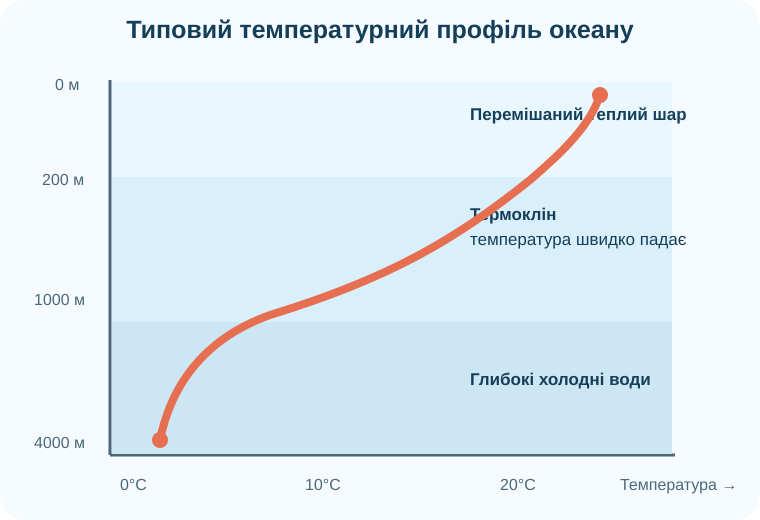

1. Не всі моря однакові
PSU — типовий діапазон солоності відкритого океану.
PSU — зручне шкільне наближення середньої океанічної солоності.
типові температури багатьох глибоких океанічних вод.
2. Лабораторія солоності

Локальна навчальна схема: випаровування, опади, річковий стік і танення льоду змінюють частку прісної води.
3. Реальна карта солоності NASA

Доказове завдання
Порівняйте центральну Північну Атлантику, екваторіальну частину Тихого океану й район гирла Амазонки. Сформулюйте одну закономірність і поясніть її через баланс випаровування ↔ опади/стік.
NASA/JPL: Aquarius і SMAP вимірюють солоність поверхні дистанційно за мікрохвильовим випромінюванням океану.
4. Температура змінюється і по широті, і з глибиною

Прочитайте профіль
У верхньому шарі вітер і хвилі перемішують воду. Нижче часто формується термоклін — шар швидкого зниження температури. У глибинах температура змінюється повільніше.
5. Температура + солоність → густина
Чому це важливо?
За інших рівних умов холодніша й солоніша вода густіша. Різниці густини допомагають формувати вертикальні рухи та великомасштабну циркуляцію океану.
6. Віртуальна мандрівка «Глибинами океанів»


CTD як доказ
Поясніть, чому одного термометра недостатньо для характеристики водної маси. Які три параметри CTD треба зіставити?
Короткий відеоблок про океанографічні дослідження. Якщо вбудовування недоступне, використайте офіційний матеріал NOAA Ocean Exploration «Meet the CTD».
7. Теорія — після діяльності
Солоність
Показник вмісту розчинених солей у морській воді. У шкільних задачах зручно працювати з PSU або ‰.
Температура
На поверхні залежить від широти, сезону, течій і теплообміну з атмосферою; з глибиною часто проходить через термоклін до холодних глибинних вод.
Густина
Залежить насамперед від температури й солоності: холодніша та солоніша вода зазвичай густіша.
8. CER: чому океан має «водні маси», а не одну однакову воду?
9. Домашнє завдання
§37. Оберіть дві акваторії з різною солоністю. Для кожної знайдіть один чинник, який може її підвищувати або знижувати. Додайте 2–3 речення висновку.